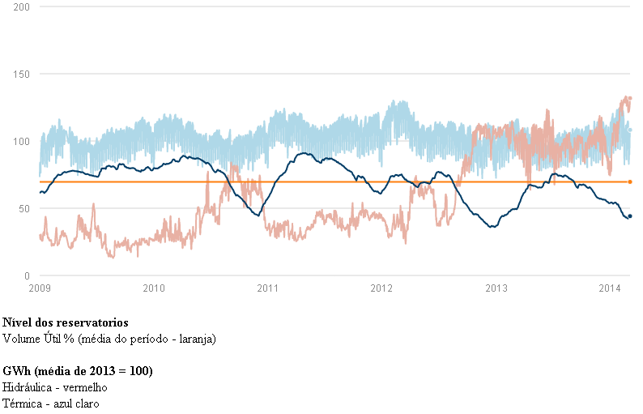

Economia / Arquivo
Data Scrapping + rCharts + Energia
Séries do setor elétrico ajudam a situar a discussão de 2014 sobre o abastecimento de energia.
Série recuperada do gráfico rCharts de 2014. A visualização preserva os dias e valores ausentes.
Publicação original
Dois temas recentes (e bastante correlacionados) devem permear a agenda política, dado o calendário eleitoral: a situação energética do país e o abastecimento de água no Estado de São Paulo. Porém, confesso que é um pouco difícil formar qualquer opinião sobre os temas dado o tom alarmista de quase todos os veículos de comunicação e a quantidade de especialistas dos setores que aparecem nos momentos mais críticos. Afinal, estamos vivendo um período crítico de desabastecimento de água e energia? Em caso afirmativo: i) Qual a principal razão?; ii) As medidas possíveis para evitar essa situação foram tomadas? Já adianto que não vou conseguir responder nenhuma dessas questões. Mas trago aqui alguns dados que tangenciam as questões, começando pelo setor elétrico (tentarei explicar em uma próxima publicação o passo-a-passo para criação desse post).
O site do Operador Nacional do Sistema Elétrico traz uma quantidade bastante detalhada dos dados do setor. No menu do lado esquerdo do site é possível encontrar a sequência de links “Resultado da Operação”>> “Boletim Diário da Operação” cuja janela disponibiliza um conteúdo grande sobre os resultados diários da operação. Os meios de comunicação geralmente dão foco para dois deles: a “Situação dos Principais Reservatórios de Acumulação” e a “Geração Hidráulica, Térmica e no Horário de Ponta”. Através desses links é possível coletar os dados diários para cada um desses indicadores e com um pouco de data scraping é possível construir uma série histórica para ambos, disponibilizada no gráfico abaixo (para acessar o gráfico completo, basta clicar no gráfico):


De cara dois aspectos relacionados aos dados chamam atenção. O primeiro, é que aparentemente estamos em um período de seca extremo. Considerando a média dos últimos 5 anos, poucas vezes estivemos abaixo da média por um período tão prolongado. Mas o segundo aspecto é talvez o mais curioso: não apenas estamos vivendo um período de seca intenso, mas por algum outro motivo a produção de energia pelas térmicas mudou de patamar no final de 2012, patamar esse que não foi alterado, nem mesmo quando o nível dos reservatórios convergiu para a média em junho do ano passado. Uma explicação possível é que associada à queda de geração de energia pelas hidroelétricas houve um aumento do consumo que exigiu o acionamento das térmicas por todo o período. Parte do aumento pode estar associado a própria condição climática (o calor excessivo por um tempo prolongado pode afetar o padrão de consumo de energia); outra parte pode ser decorrente da orientação da política pública no sentido da redução da conta de luz e um possível aumento da demanda em resposta à diminuição do custo associado ao consumo de energia elétrica. De fato, o anúncio da redução permeou o ano de 2012, sempre mirando a conta de luz em 2013 o que poderia explicar a mudança de patamar. Por fim, é possível imaginar que houve um esforço de recuperação do nível dos reservatórios o que exigiu, em contrapartida, a substituição da energia hidrelétrica pela térmica.
Deixo um formulário abaixo para aqueles que quiserem mais informações sobre como realizei essa análise. Como mencionado acima, os dados foram obtidos no site site do Operador Nacional do Sistema Elétrico e todo o trabalho foi realizado no R (pacotes rCharts, XML e RCurl).